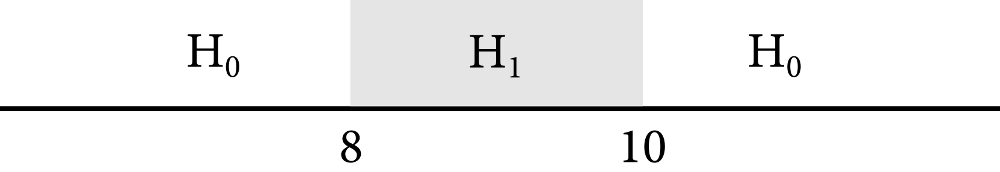

4 假设检验与等价性检验
从模型到意义 - 中文翻译
来源：Vincent Arel-Bundock，从模型到意义：如何解读 R 和 Python 中的统计模型 - 第 4 章 假设检验与等价性检验。 来源说明：截至 2026-09-19，修订版 870f15a0 的公开仓库不包含本章完整的 .qmd 源文件。本页面根据同日下载的公开 HTML 快照翻译而成。因此，R/Python 代码和图形均以静态形式展示；本网站未重新执行上游代码。 网站文本（C）2025 Vincent Arel-Bundock，保留所有权利；marginaleffects 软件代码采用 GPL-3 许可证。 本页面是中文译文而非原文；译文依据本 Notes 网站所采用的授权声明翻译并发布。
本章介绍两种统计检验程序：零假设检验和等价性检验。1 正如我们将看到的，这两种互补的方法极其灵活；它们可以应用于本书研究的所有目标量。
零假设检验旨在评估我们能否拒绝这样的可能性：总体参数或参数函数取某个特定值，例如零。零假设检验在数据分析的各个领域都很常见。它们可以帮助我们回答如下问题：
认知行为疗法对抑郁症是否具有非零效应？
新药的效应是否不同于现有处理的效应？
就读公立学校和私立学校的学生，其考试成绩之间是否存在统计显著差异？
等价性检验颠倒了这一逻辑。它们不是为了确立差异，而是为了论证相似性。例如，等价性检验可以表明某种药物的估计效应与零“等价”，或者与另一种药物的效应“没有实质性差异”。这种方法适合回答如下问题：
仿制药的效应是否等价于品牌药的效应？
营销活动对消费的效应是否可以忽略？
两个社区的社会信任水平是否相似？
零假设检验和等价性检验是极其灵活的工具。它们可以应用于模型参数，也可以应用于本书研究的任何目标量：预测、反事实比较和斜率。读完本书第二部分后，你不仅能够计算这些目标量，还能够对它们开展各种有意义的统计检验。
但是，即使我们认识到假设检验和等价性检验是强大的工具，也必须承认它们存在根本局限。尤其是在进行此类检验时，分析者必须始终牢记统计显著性与实际意义之间的区别。如果在零假设和模型均成立的假想世界中，某个结果纯粹由于偶然（即抽样变异）而出现的可能性很低，我们就称其“具有统计显著性”。如果某个结果对现实世界具有重要影响，我们就称其“具有实际意义”。一个结果是否具有实际意义，并不是由统计因素决定的；它取决于所在领域、研究问题和理论。许多结果具有统计显著性，却没有多少实际意义。处理效应的大小往往可以与零区分开来，但太小而无法为实践者所用。在这些情况下，数据分析者通常会针对零假设检验和等价性检验报告较小的 \p\ 值。
The rest of this chapter explores null hypothesis and equivalence tests, and shows how to execute them with the marginaleffects package. The main dataset that we use for illustration comes from Thornton (2008): The demand for, and impact of, learning HIV status. For this article, the author conducted a randomized controlled trial to find out if they could encourage people to seek information about their HIV status. They administered HIV tests at home to many people in rural Malawi. Then, they randomly assigned some study participants to receive a small monetary incentive if they were willing to travel to a counseling center, in order to learn the results of their test.
The outcome of interest is a binary variable, outcome, equal to 1 if a study participant chose to travel to the center, and 0 otherwise. The treatment is a binary variable, incentive, equal to 1 if the participant was part of the treatment group who received an incentive, and 0 if they received no money. The researchers also collected information about people’s distance from the test center, and a numeric identifier for the village in which they live. Finally, our dataset includes agecat, a measure of the participants’ age in three categories: <18, 18 to 35, and >35.
We use the get_dataset() function from the marginaleffects package to load the dataset in memory, the head() function to extract the first few rows, and the tt() function from the tinytable package to display results in a good-looking table.
library(marginaleffects)
library(tinytable)
dat = get_dataset("thornton")
tt(head(dat))
preamble start
|———|———|———–|——–|———–|—–|———|——–|
Six rows of the Thornton (2008) dataset. {#tinytable_xvjuuhmb6vic6e4g4vg0 .tinytable quarto-disable-processing=“true” style=“width: auto; margin-left: auto; margin-right: auto;”}
hack to avoid NA insertion in last line
import polars as pl
import numpy as np
from marginaleffects import *
from plotnine import *
from scipy.stats import norm
from statsmodels.formula.api import logit, ols
dat = get_dataset("thornton")
dat.head(6)shape: (6, 8)
|———|———|———-|——–|———–|—–|———|——–|
mod = ols("outcome ~ agecat - 1",
data=dat.to_pandas()).fit()
mod.paramsagecat[<18] 0.671875
agecat[18 to 35] 0.678700
agecat[>35] 0.727735
dtype: float64
dat.group_by("agecat").agg(pl.col("outcome").mean())shape: (3, 2)
|————|———-|
When analyzing these data, Thornton (2008) found that 34% of participants in the control group sought to learn their HIV status. In contrast, a small monetary incentive more than doubled this proportion. Simply put, the intervention proved to be highly successful and cost effective.
Over the next few chapters, we will use the marginaleffects package to analyze various aspects of Thornton’s data. Here, we ask: Do minors, young adults, and older adults have different propensities to seek information about their HIV status?
To answer this question, let us consider a linear probability model with the binary outcome as dependent variable and each level of the agecat variable as predictors.
\ = _1 _{<18} + _2 _{18 to 35} + _3 _{>35} + \
We use the lm() function to estimate this model by ordinary least squares, adding -1 to the formula in order to suppress the usual intercept. We then call coef() to extract the vector of coefficient estimates.
mod = lm(outcome ~ agecat - 1, data = dat)
coef(mod)
agecat<18 agecat18 to 35 agecat>35
0.6718750 0.6787004 0.7277354
mod = ols("outcome ~ agecat - 1", data=dat.to_pandas()).fit()
mod.paramsagecat[<18] 0.671875
agecat[18 to 35] 0.678700
agecat[>35] 0.727735
dtype: float64Because there is no other predictor in the model, and since we intentionally dropped the intercept, the coefficients associated with agecat levels measure the average outcome in each age category. Indeed, the estimated coefficients printed above are exactly identical to subgroup means calculated using the aggregate() function.
aggregate(outcome ~ agecat, FUN = mean, data = dat)
agecat outcome
1 <18 0.6718750
2 18 to 35 0.6787004
3 >35 0.7277354
dat.group_by("agecat").agg(pl.col("outcome").mean())shape: (3, 2)
|————|———-|
At first glance, it looks like the probability that a young adult will seek information about their HIV status is smaller than the probability for older adults: 67.9% for participants between 18 and 35 years old, and 72.8% for those above 35. In the next section, we conduct a formal statistical test of this proposition.
4.1 Null hypothesis
The null hypothesis test is a statistical method used to determine if there is sufficient evidence to reject a presumed statement about a population parameter. The null hypothesis \H_0\ represents a default or initial claim, usually suggesting no effect or no difference in the parameter of interest. For example, \H_0\ might state that the mean of a population is equal to a specific value, or that there is no association between two variables.
To conduct a null hypothesis test, we begin by choosing a null hypothesis. The choice of \H_0\ is a substantive one, not a statistical one. It depends on our domain and research question. After choosing \H_0\, we must pick a test statistic with known sampling distribution, such as \t\ or \Z\. This sampling distribution represents the distribution of test statistics that we would observe, across samples, if the null hypothesis were true. We then use observed data to compute the test statistic, and compare it to its assumed distribution under \H_0\. If the test statistic is extreme, we conclude that if the null were true, we would be very unlikely to observe the data that we did. If the test statistic is extreme, we reject the null hypothesis.
Most statistics textbooks discuss the theory of null hypothesis testing.2 This section is more practical. It illustrates how to use marginaleffects to conduct linear or non-linear tests on model parameters or on functions of those parameters. Throughout, we adopt the standard Wald approach and construct \Z\ test statistics of this form
\ Z=, \
where \\ is a vector of parameter estimates; and \h()\ is a function of those estimates, a quantity of interest such as a prediction, counterfactual comparison, or slope; \H_0\ is the null hypothesis; and \[h()]\ is the estimated variance of the quantity of interest.3
When \|Z|\ is large, we can reject the null hypothesis that \h()=H_0\. The intuition is straightforward. First, the numerator of Equation 4.2 measures the distance between the estimated quantity of interest and the null hypothesis. When that distance is large, the observed data is far from the data that would be generated if the null were true. This makes \H_0\ seem less plausible. Second, the denominator quantifies the uncertainty in our estimate. When that uncertainty is small, our estimate is precise, which puts us in a better position to discriminate against the null hypothesis. In sum, when the numerator is large and/or the denominator is small, the absolute value of \Z\ is large, and we can reject the null hypothesis.
Recall that when we estimated the model in Equation 4.1, we obtained these results:
summary(mod)
Estimate Std. Error t value Pr(>|t|)
agecat<18 0.67188 0.02564 26.20 <0.001
agecat18 to 35 0.67870 0.01233 55.06 <0.001
agecat>35 0.72774 0.01336 54.48 <0.001
mod.summary()|——————-|——————|———————|———|
OLS Regression Results {.simpletable .caption-top .table .table-sm .table-striped .small}
|——————–|——–|———|——–|———-|———|———|
|—————-|———-|——————-|———–|
Notes:
[1] Standard Errors assume that the covariance matrix of the errors is correctly specified.
By default, the summary functions in R and Python report null hypothesis tests against a very specific null hypothesis: that a coefficient is equal to zero. Here, the first coefficient is 0.67188 and the standard errors 0.02564. The test statistic is designed to check if we can reject the null hypothesis that the coefficient for agecat<18 is equal to zero (\H_0: _1=0\):4
\ Z = = = 26.20 \
Equation 4.3 shows how to compute the test statistic reported by default by R. Does this test make sense from a substantive perspective? Is it interesting? Do we really need a formal test to reject the null hypothesis that 0% of people below the age 18 are willing to retrieve their HIV test result from the clinic? If the answer to any of those questions is “no,” we can easily construct alternative test statistics with the marginaleffects package.
4.1.1 Choice of null hypothesis
In our running example, a null hypothesis of zero hardly makes sense. Instead, we should specify a different value of \H_0\, to compare our results against a more meaningful benchmark. For example, we could ask: Can we reject the null hypothesis that the probability of retrieving one’s HIV test result is different from a coin flip?
To answer this question, we use the hypotheses() function and its hypothesis argument.
hypotheses(mod, hypothesis = 0.5)
|—————-|———-|————|——|————-|——-|——–|
hypotheses(mod, hypothesis=0.5)shape: (3, 8)
┌──────────────────┬──────────┬───────────┬──────┬──────────┬──────┬───────┬───────┐
│ Term ┆ Estimate ┆ Std.Error ┆ z ┆ P(>|z|) ┆ S ┆ 2.5% ┆ 97.5% │
│ --- ┆ --- ┆ --- ┆ --- ┆ --- ┆ --- ┆ --- ┆ --- │
│ str ┆ str ┆ str ┆ str ┆ str ┆ str ┆ str ┆ str │
╞══════════════════╪══════════╪═══════════╪══════╪══════════╪══════╪═══════╪═══════╡
│ agecat[<18] ┆ 0.672 ┆ 0.0256 ┆ 6.7 ┆ 2.45e-11 ┆ 35.2 ┆ 0.622 ┆ 0.722 │
│ agecat[18 to 35] ┆ 0.679 ┆ 0.0123 ┆ 14.5 ┆ 0 ┆ inf ┆ 0.655 ┆ 0.703 │
│ agecat[>35] ┆ 0.728 ┆ 0.0134 ┆ 17 ┆ 0 ┆ inf ┆ 0.702 ┆ 0.754 │
└──────────────────┴──────────┴───────────┴──────┴──────────┴──────┴───────┴───────┘The results show that all three \Z\ statistics are large in absolute terms. Therefore, we can reject the null hypotheses that these coefficients are equal to 0.5. If the true chances of seeking information about HIV status were 50/50, we would be very unlikely to observe data like these.
We would draw the same conclusion by computing Wald-style \p\ values manually, measuring the area under the tails of the test statistic’s distribution. In R, the pnorm(x) function measures the area under the normal distribution to the left of x. The two-tailed \p\ value associated to the first coefficient can thus be computed as
# First coefficient
b = coef(mod)[1]
# The standard error is the square root of the diagonal element of the
# variance-covariance matrix
se = sqrt(diag(vcov(mod)))[1]
# The Z statistic for Wald test with null hypothesis of b = 0.5
z = (b - .5) / se
# The p-value is the area under the curve, in the tails of
# the normal distribution beyond |Z|
pnorm(-abs(z)) * 2
agecat<18
2.043492e-11
hypotheses(mod, hypothesis = 0.5)shape: (3, 8)
┌──────────────────┬──────────┬───────────┬──────┬──────────┬──────┬───────┬───────┐
│ Term ┆ Estimate ┆ Std.Error ┆ z ┆ P(>|z|) ┆ S ┆ 2.5% ┆ 97.5% │
│ --- ┆ --- ┆ --- ┆ --- ┆ --- ┆ --- ┆ --- ┆ --- │
│ str ┆ str ┆ str ┆ str ┆ str ┆ str ┆ str ┆ str │
╞══════════════════╪══════════╪═══════════╪══════╪══════════╪══════╪═══════╪═══════╡
│ agecat[<18] ┆ 0.672 ┆ 0.0256 ┆ 6.7 ┆ 2.45e-11 ┆ 35.2 ┆ 0.622 ┆ 0.722 │
│ agecat[18 to 35] ┆ 0.679 ┆ 0.0123 ┆ 14.5 ┆ 0 ┆ inf ┆ 0.655 ┆ 0.703 │
│ agecat[>35] ┆ 0.728 ┆ 0.0134 ┆ 17 ┆ 0 ┆ inf ┆ 0.702 ┆ 0.754 │
└──────────────────┴──────────┴───────────┴──────┴──────────┴──────┴───────┴───────┘
b = mod.params.iloc[0]
se = np.sqrt(np.diag(mod.cov_params()))[0]
z = (b - 0.5) / se
(norm.cdf(-np.abs(z))) * 2np.float64(2.0434919597788465e-11)\p\ is extremely small, which means that we can reject the null hypothesis of \H_0: _1=0.5\.
4.1.2 Linear and non-linear hypothesis tests
In many contexts, analysts are not solely interested in testing against a simple numeric null hypothesis like 0 or 0.5. Instead, they may wish to compare different quantities to one another. For instance, we can ask if the coefficient associated to the first age category is equal to the coefficient associated to the third age category, \H_0:_1=_3\.
To conduct this test, all we need to do is supply an equation-style string to the hypothesis argument. The terms of this equation start with b, followed by the position (or index) of the estimate. If we are interested in comparing the first and third coefficients, the equation must include b1 and b3.
h = hypotheses(mod, hypothesis = "b3 - b1 = 0")
b = sprintf("%.3f", h$estimate)
p = sprintf("%.3f", h$p.value)
annotated = h
annotated
|————|———-|————|——|————-|———–|——–|
h_py = hypotheses(mod, hypothesis = "b2 - b0 = 0")
{
"estimate": f"{h_py['estimate'][0]:.3f}",
"p.value": f"{h_py['p_value'][0]:.3f}",
}{'estimate': '0.056', 'p.value': '0.053'}
h_pyshape: (1, 7)
┌──────────┬───────────┬──────┬─────────┬──────┬───────────┬───────┐
│ Estimate ┆ Std.Error ┆ z ┆ P(>|z|) ┆ S ┆ 2.5% ┆ 97.5% │
│ --- ┆ --- ┆ --- ┆ --- ┆ --- ┆ --- ┆ --- │
│ str ┆ str ┆ str ┆ str ┆ str ┆ str ┆ str │
╞══════════╪═══════════╪══════╪═════════╪══════╪═══════════╪═══════╡
│ 0.0559 ┆ 0.0289 ┆ 1.93 ┆ 0.0535 ┆ 4.23 ┆ -0.000832 ┆ 0.113 │
└──────────┴───────────┴──────┴─────────┴──────┴───────────┴───────┘
Term: b2-b0=0This is equivalent to computing the difference between the third and first estimated coefficients.
\ 0.7277354 - 0.671875 = 0.0558604 \
Can we reject the hypothesis that the probability of seeking one’s HIV result is the same in the <18 and >35 groups? That depends on the threshold of statistical significance that one is willing to accept. The \p\ value shown in the table above is very close to 0.05, a conventional threshold of statistical significance. Whether it makes sense to use that threshold in any given application depends on our tolerance to false positives. If mistakenly rejecting the null has costly consequences, we should pick a more stringent threshold of statistical significance. Otherwise, it may be fine to reject the null even if the \p\ value is not extremely small.
In the test above, we checked if the difference between the two coefficients is equal to 0. Rather than a difference, we could also test against the null hypothesis that the ratio of \_3\ to \_1\ is equal to 1. If this ratio is greater than one, we know that the probability of seeking one’s HIV result is higher in the >35 group than in the <18 group. If the ratio is less than one, we know that the probability of seeking one’s HIV result is lower in the >35 group than in the <18 group.
hypotheses(mod, hypothesis = "b3 / b1 = 1")
|————|———-|————|——|————-|———-|——–|
hypotheses(mod, hypothesis = "b2 / b0 = 1")shape: (1, 7)
┌──────────┬───────────┬──────┬─────────┬──────┬─────────┬───────┐
│ Estimate ┆ Std.Error ┆ z ┆ P(>|z|) ┆ S ┆ 2.5% ┆ 97.5% │
│ --- ┆ --- ┆ --- ┆ --- ┆ --- ┆ --- ┆ --- │
│ str ┆ str ┆ str ┆ str ┆ str ┆ str ┆ str │
╞══════════╪═══════════╪══════╪═════════╪══════╪═════════╪═══════╡
│ 0.0831 ┆ 0.0459 ┆ 1.81 ┆ 0.07 ┆ 3.84 ┆ -0.0068 ┆ 0.173 │
└──────────┴───────────┴──────┴─────────┴──────┴─────────┴───────┘
Term: b2/b0=1Once again, the results suggest that the estimated probability is higher in the older group, but the \p\ value does not quite cross conventional threshold of statistical significance of 0.05. Therefore, a conservative analyst would not reject the null hypothesis that these two probabilities are the same.
The equations supported by the hypothesis argument are not limited to simple tests of equality, differences, or ratios. Indeed, the user can write equations with more than two estimates or with various (potentially non-linear) transformations.
hypotheses(mod, hypothesis = "b2^2 * exp(b1) = 0")
hypotheses(mod, hypothesis = "b1 - (b2 * b3) = 2")
import numpy as np
hypotheses(mod, hypothesis = "b1**2 * np.exp(b0) = 0")
hypotheses(mod, hypothesis = "b0 - (b1 * b2) = 2")marginaleffects also offers a formula-based interface which acts as a shortcut to some of the more common hypothesis tests. For example, if we want to compute the difference between every coefficient and the “reference” quantity (i.e., the first estimate), we supply a formula with the word “reference” on the right side of the tilde symbol (~) and the word “difference” on the left side.
hypotheses(mod, hypothesis = difference ~ reference)
|—-|—-|—-|—-|—-|—-|—-|
hypotheses(mod, hypothesis = "difference ~ reference")shape: (2, 8)
┌──────────────────────┬──────────┬───────────┬──────┬─────────┬───────┬───────────┬────────┐
│ Term ┆ Estimate ┆ Std.Error ┆ z ┆ P(>|z|) ┆ S ┆ 2.5% ┆ 97.5% │
│ --- ┆ --- ┆ --- ┆ --- ┆ --- ┆ --- ┆ --- ┆ --- │
│ str ┆ str ┆ str ┆ str ┆ str ┆ str ┆ str ┆ str │
╞══════════════════════╪══════════╪═══════════╪══════╪═════════╪═══════╪═══════════╪════════╡
│ (agecat[18 to 35]) - ┆ 0.00683 ┆ 0.0285 ┆ 0.24 ┆ 0.81 ┆ 0.303 ┆ -0.049 ┆ 0.0626 │
│ (agecat[<… ┆ ┆ ┆ ┆ ┆ ┆ ┆ │
│ (agecat[>35]) - ┆ 0.0559 ┆ 0.0289 ┆ 1.93 ┆ 0.0535 ┆ 4.23 ┆ -0.000832 ┆ 0.113 │
│ (agecat[<18]) ┆ ┆ ┆ ┆ ┆ ┆ ┆ │
└──────────────────────┴──────────┴───────────┴──────┴─────────┴───────┴───────────┴────────┘Now, let’s say we want to compare each coefficient to the one that immediately precedes it: the young adults to the minors, and the older adults to the young adults. Further suppose we want to compute ratio of coefficients, instead of differences. We can achieve this by setting ratio on the left-hand side, and sequential on the right-hand side of the formula.
hypotheses(mod, hypothesis = ratio ~ sequential)
|—-|—-|—-|—-|—-|—-|—-|
hypotheses(mod, hypothesis = "ratio ~ sequential")shape: (2, 8)
┌─────────────────────────────────┬──────────┬───────────┬───────┬─────────┬───────┬───────┬───────┐
│ Term ┆ Estimate ┆ Std.Error ┆ z ┆ P(>|z|) ┆ S ┆ 2.5% ┆ 97.5% │
│ --- ┆ --- ┆ --- ┆ --- ┆ --- ┆ --- ┆ --- ┆ --- │
│ str ┆ str ┆ str ┆ str ┆ str ┆ str ┆ str ┆ str │
╞═════════════════════════════════╪══════════╪═══════════╪═══════╪═════════╪═══════╪═══════╪═══════╡
│ (agecat[18 to 35]) / (agecat[<… ┆ 1.01 ┆ 0.0427 ┆ 0.238 ┆ 0.812 ┆ 0.301 ┆ 0.926 ┆ 1.09 │
│ (agecat[>35]) / (agecat[18 to … ┆ 1.07 ┆ 0.0277 ┆ 2.61 ┆ 0.00912 ┆ 6.78 ┆ 1.02 ┆ 1.13 │
└─────────────────────────────────┴──────────┴───────────┴───────┴─────────┴───────┴───────┴───────┘4.1.3 Multiple comparisons and joint hypothesis tests
The goal of null hypothesis testing is to assess if observed data provide enough evidence to reject a null hypothesis. When conducting a single hypothesis test, the probability of Type I error—falsely rejecting the null hypothesis when it is true—is controlled at a predefined significance level, usually 5%. However, when multiple hypothesis tests are performed, the likelihood of at least one Type I error increases with the number of tests. This phenomenon is known as the multiple comparisons problem.
Statisticians have proposed many procedures to adjust hypothesis tests for multiple comparisons, including the Bonferroni, Holm, and Westfall corrections. The hypotheses() function in the marginaleffects package can apply many such strategies, and report corrected \p\ values as well as family-wise confidence intervals. All we need to do is use the multcomp argument.
hypotheses(mod, multcomp = "holm")
|—————-|———-|————|——|————-|——-|——–|
The hypotheses() function also supports joint hypothesis tests, via the joint and joint_test arguments. This allows users to test against the null hypothesis that several quantities of interest are jointly/simultaneously equal to zero. The marginaleffects.com website includes documentation and examples on how to conduct such tests.
4.2 Equivalence
In many contexts, analysts are less interested in rejecting a null hypothesis, and more interested in testing whether an estimate is “equivalent” to some benchmark or interval. For example, medical researchers may wish to determine if the effect of a new drug is similar to that of existing treatments, or if it can be considered “negligible” in terms of “clinical significance.” To answer such questions, we can use an equivalence test like the two one-sided test or TOST (Wellek 2010; Rainey 2014; Lakens et al. 2018).
An equivalence test is a statistical method used to determine if an estimate is “practically equivalent” to a benchmark, within a specified margin of equivalence. Whereas traditional significance tests attempt to reject a specific (point) null hypothesis, an equivalence test attempts to reject the null hypothesis that the estimand lies outside an interval of practical equivalence. If we can reject that null hypothesis, we conclude that the quantity of interest is likely to be small or close to the benchmark.
To see how this may work in practice, imagine that taking a well-established course of medication reduces the probability of suffering from a cardiovascular arrest by 9 percentage points. A pharmaceutical company introduces a new medication which, they claim, further reduces the chances of an adverse event. The Québec provincial government must decide if they will refund this more expensive drug. To inform decision-making, government defines an interval of equivalence: if the estimated effect of the new treatment is between 8 and 10 percentage points, both drugs shall be considered “equivalent.” The definition of this equivalence interval is not a statistical problem. It is a substantive question that depends on the field, research question, costs, theory, etc.
Figure 4.1 illustrates this situation. The horizontal line represents possible values of the parameter of interest. If the effect of the new drug (\\) falls between 8 and 10 percentage points, it is considered equivalent to the effect of the old drug. In this context, the alternative hypothesis is \H_1:[8,10]\. The null hypothesis is \H_0:<8 >10\.
We conclude for equivalence when we can reject the null hypothesis that the quantity of interest is far from the benchmark, that is, when we reject the \H_0\ hypothesis that \\ falls in the white areas of Figure 4.1. In other words, if the equivalence test is conclusive, we know that it would be surprising if the effect of the new drug were much different from the effect of the old drug.

To conduct a TOST of equivalence, we proceed in six steps.
Quantity of interest: Define and estimate a quantity of interest \\, which can be a coefficient, function of coefficients, prediction, counterfactual comparison, slope, etc.
Significance threshold: Choose a statistical significance threshold \\ below which we will reject the null hypothesis.5
Interval: Use subject matter knowledge to define an interval of equivalence \[a,b]\. If the quantity of interest \\ falls between \a\ and \b\, it is considered clinically irrelevant, or practically equivalent to a benchmark.
Non-inferiority: Compute the \p\ value associated with a one-tailed null hypothesis test to determine if we can reject the null hypothesis that \< a\.
Non-superiority: Compute the \p\ value associated with a one-tailed null hypothesis test to determine if we can reject the null hypothesis that \> b\.
Equivalence: Check if the maximum of the non-inferiority and non-superiority \p\ values is lower than the chosen threshold of statistical significance.
To illustrate, let’s revisit the model we fitted above and compare the probability that people in the \18 to 35\ and \>35\ age brackets will travel to learn their HIV status.
coef(mod)
agecat<18 agecat18 to 35 agecat>35
0.6718750 0.6787004 0.7277354
hypotheses(mod, hypothesis = "b3 - b2 = 0")
|————|———-|————|—–|————-|——–|——–|
hypotheses(mod, hypothesis = "b2 - b1 = 0")shape: (1, 7)
┌──────────┬───────────┬─────┬─────────┬──────┬────────┬────────┐
│ Estimate ┆ Std.Error ┆ z ┆ P(>|z|) ┆ S ┆ 2.5% ┆ 97.5% │
│ --- ┆ --- ┆ --- ┆ --- ┆ --- ┆ --- ┆ --- │
│ str ┆ str ┆ str ┆ str ┆ str ┆ str ┆ str │
╞══════════╪═══════════╪═════╪═════════╪══════╪════════╪════════╡
│ 0.049 ┆ 0.0182 ┆ 2.7 ┆ 0.00702 ┆ 7.15 ┆ 0.0134 ┆ 0.0847 │
└──────────┴───────────┴─────┴─────────┴──────┴────────┴────────┘
Term: b2-b1=0The results above show that the estimated difference in coefficients for the two groups is equal to 0.0490, and that this difference is statistically significant (i.e., likely different from zero). This difference may be statistically significant, but is it meaningful, clinically relevant, or practically important?
The first step to answer this question is to define exactly what we mean by “meaningful” or “important.” Specifically, we must define an interval of equivalence, in which estimates are considered unimportant. There is no purely statistical criterion to construct this interval; the decision depends entirely on domain expertise and subject matter knowledge.
In our running example, the researcher could decide that if the difference in \Pr(=1)\ between the young and older adults is between -5 and 5 percentage points, we can ignore it. If the difference falls in the \[-0.05,0.05]\ interval, it is practically equivalent to zero.
To conduct a TOST on this equivalence range, we simply add the equivalence argument to the previous call.
h = hypotheses(mod,
hypothesis = "b3 - b2 = 0",
equivalence = c(-0.05, 0.05))
h
|—-|—-|—-|—-|—-|—-|—-|—-|—-|
h = hypotheses(mod,
hypothesis="b2 - b1 = 0",
equivalence=[-0.05, 0.05])
hshape: (1, 10)
┌──────────┬───────────┬─────┬─────────┬───┬────────────┬───────────┬────────┬────────┐
│ Estimate ┆ Std.Error ┆ z ┆ P(>|z|) ┆ … ┆ p (NonSup) ┆ p (Equiv) ┆ 2.5% ┆ 97.5% │
│ --- ┆ --- ┆ --- ┆ --- ┆ ┆ --- ┆ --- ┆ --- ┆ --- │
│ str ┆ str ┆ str ┆ str ┆ ┆ str ┆ str ┆ str ┆ str │
╞══════════╪═══════════╪═════╪═════════╪═══╪════════════╪═══════════╪════════╪════════╡
│ 0.049 ┆ 0.0182 ┆ 2.7 ┆ 0.00702 ┆ … ┆ 0.479 ┆ 0.479 ┆ 0.0134 ┆ 0.0847 │
└──────────┴───────────┴─────┴─────────┴───┴────────────┴───────────┴────────┴────────┘
Term: b2-b1=0These results allow us to reach three main conclusions:
Non-inferiority: The \p\ value associated to this test is very small (\p<0.001\). We can reject the null hypothesis that the difference between coefficients is lower than \-0.05\.
Non-superiority: The \p\ value associated to this test is large (0.479). We cannot reject the null hypothesis that the difference between coefficients is larger than \0.05\.
Equivalence: The \p\ value associated to the TOST of equivalence corresponds to the maximum of the non-superiority and non-superiority values: 0.479. Again, we cannot reject the null hypothesis that the two coefficients are meaningfully different from one another. We cannot reject the null hypothesis that \_3-_2<-0.05 _3-_2>0.05\.
In this example, we applied a TOST to a difference between two coefficients, but the same procedure can be applied to other quantities of interest, such as predictions, counterfactual comparisons, and slopes. The bounds of the equivalence interval can also be set wherever the analyst prefers. Often, the equivalence interval will be centered around zero, but it can be set elsewhere.
4.3 Summary
This chapter introduced two classes of statistical testing procedures: null hypothesis and equivalence tests.
A null hypothesis test allows us to determine if there is enough evidence to reject the hypothesis that a parameter (or function of parameters) is equal to a given value.
Examples of statements that could be rejected by a null hypothesis test include:
The predicted wages of college and high school graduates are equal.
The effect of a new drug on a health outcome is zero.
A marketing campaign has the same effect on sales in rural or urban areas.
When a null hypothesis test indicates that we can reject statements like these (small \p\ value), we establish a difference.
An equivalence test allows us to determine if there is enough evidence to reject the hypothesis that a parameter (or function of parameters) is meaningfully different from a benchmark.
Examples of statements that could be rejected by an equivalence test include:
The difference in wages between college and high school graduates is considerable.
The effect of a new drug on a health outcome is meaningfully different from the effect of an existing treatment.
The effect of a marketing campaign on consumption is much larger than zero.
When an equivalence test indicates that we can reject statements like these (small \p\ value), we establish a similarity.
All the main marginaleffects functions include hypothesis and equivalence arguments. These arguments make it easy to conduct null hypothesis and equivalence tests on any of the quantities estimated by the package—predictions, counterfactual comparisons, and slopes—as well as on arbitrary functions of those quantities.
Aronow, Peter M., and Benjamin T. Miller. 2019. Foundations of Agnostic Statistics. Cambridge University Press. https://doi.org/10.1017/9781316831762. Cameron, A Colin, and Pravin K Trivedi. 2005. Microeconometrics: Methods and Applications. Cambridge university press. Hansen, Bruce. 2022a. Econometrics. 1st ed. Princeton University Press.https://press.princeton.edu/books/hardcover/9780691223248/econometrics . Hansen, Bruce. 2022b. Probability and Statistics for Economists. 1st ed. Princeton University Press.https://press.princeton.edu/books/hardcover/9780691235899/probability-and-statistics-for-economists . Lakens, Daniël, Anne M Scheel, and Peder M Isager. 2018. “Equivalence Testing for Psychological Research: A Tutorial.” Advances in Methods and Practices in Psychological Science 1 (2): 259–69. Rainey, Carlisle. 2014. “Arguing for a Negligible Effect.” American Journal of Political Science 58 (4): 1083–91. Thornton, Rebecca L. 2008. “The Demand for, and Impact of, Learning HIV Status.” American Economic Review 98 (5): 1829–63. Wasserman, Larry. 2004. All of Statistics: A Concise Course in Statistical Inference. Springer Texts in Statistics. Springer. https://doi.org/10.1007/978-0-387-21736-9. Wellek, Stefan. 2010. Testing Statistical Hypotheses of Equivalence and Noninferiority. CRC Press.https://www.taylorfrancis.com/books/mono/10.1201/EBK1439808184/testing-statistical-hypotheses-equivalence-noninferiority-stefan-wellek .
Wald-style null hypothesis tests are described in most statistical textbooks. Readers who want to learn more about equivalence testing can refer to the book length treatment by Wellek (2010) or to articles by Rainey (2014) and Lakens et al. (2018).↩︎
See for example Cameron and Trivedi (2005, sec. 7.2), Aronow and Miller (2019, sec. 3.4), Hansen (2022b), Hansen (2022a), and Wasserman (2004).↩︎
As described in Chapter 14, the default strategy for null hypothesis tests in
marginaleffectsis to compute standard errors using the delta method. That chapter also explains how to use the bootstrap or simulations instead.↩︎By default,
Rreports \t\, which is equivalent to \Z\ in large samples.↩︎Conventional thresholds include 0.05, 0.01, and 0.001, but these values are arbitrary. The choice should be made based on one’s tolerance for false positives in the specific context of the study.↩︎